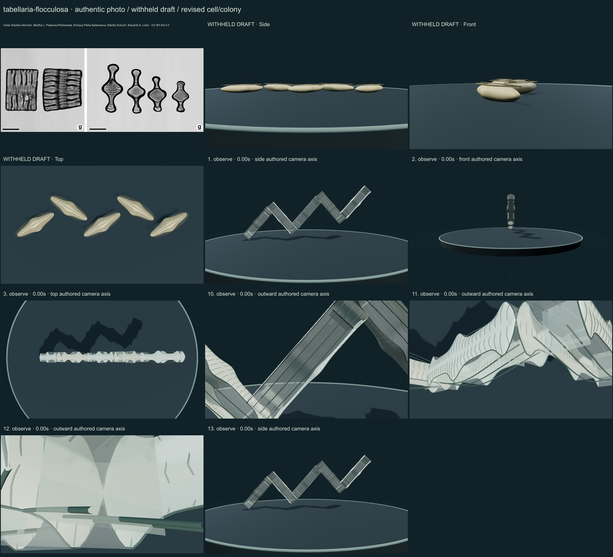
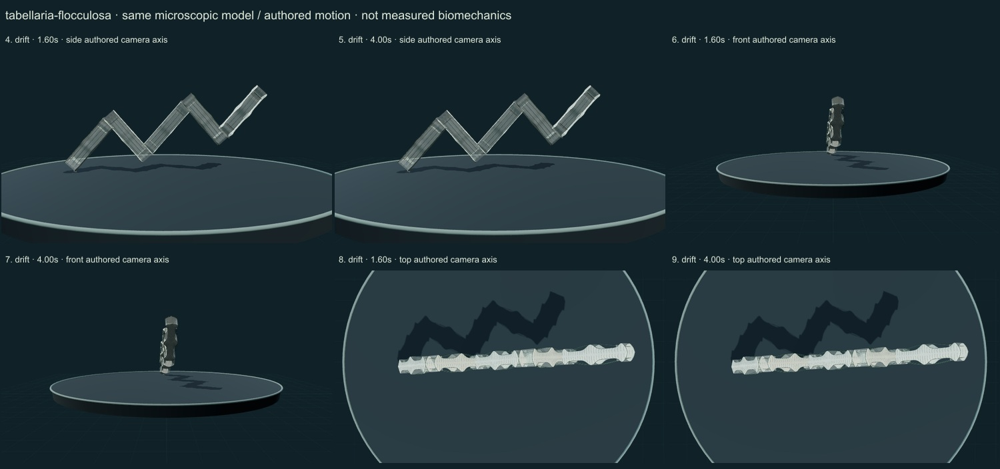

PhenoVoxel Archive · v0.6.26 · October25,2026
300 records after verified publication; all50 original held drafts have initial corrections, including all46 in the renewed foreground request.250 additional species remain to550. Release register.
Carla Giselda Heinrich, Martha L. Palacios-Peñaranda, Enrique Peña-Salamanca, Marilia Schuch, Eduardo A. Lobo · CC BY-SA 4.0. Formalin-fixed, acid-cleaned prepared diatom frustules. Rectangular girdle views and centrally inflated capitate valve views; not living chloroplast evidence or calibrated3D anatomy. Left and right lower panel g regions only, same pixel scale,20px white gap. Cropped off unrelated panels a-f; retained original g labels and scale bars. Resized1200width JPEG94. No generative alteration.
Exact source/download/derivative checksums and crop regions are preserved in the linked data. Tabellaria crops contain only panelg; Rhodospirillum contains only Figure1a and retains strain labels/scale. No other copyrighted reference figures are redistributed. Source photographs are authentic, with no generated organisms.
Five septate frustules meet at corner attachment cues in a selected zigzag colony. Valves have a broad middle and capitate ends; girdle walls and internal septa remain visible.
Prepared-frustule presentation distinguishes centrally inflated capitate valves from rectangular septate girdle walls. Closed girdle-band and septum cues have original numeric surfaces without living plastid claims.
Remaining: Girdle-band count, rudimentary septa, rimoportulae and marginal spines are incomplete; corner geometry and valve ends remain idealized. Some close surfaces intersect or occlude internal bands. The source shows isolated cleaned frustules, not this measured colony or living optical appearance. Only whole-group external drift is illustrated.
A mild external colony drift changes only the whole group. No self-propelled swimming, cell division, mucilage mechanics or life-cycle simulation.
Partly stylized, unmeasured educational reconstructions. Silica/envelope optics, fine ultrastructure, proportions and motion timing remain approximate. No independent specialist validation, accuracy percentage, measured biomechanics, physiological solver or simulated microscopy. Source preparation and taxonomic opinions are explicit.
13 actual final nonblank main-viewer states individually inspected on two labelled sheets: authentic micrograph, withheld draft, whole-model side/front/top, six representative motion states, three partial detail views and Observe reset.


Partly stylized, unmeasured educational reconstructions. Silica/envelope optics, fine ultrastructure, proportions and motion timing remain approximate. No independent specialist validation, accuracy percentage, measured biomechanics, physiological solver or simulated microscopy. Source preparation and taxonomic opinions are explicit. Prior293 species objects and credited wolf/tiger meshes remain unchanged. Recorded occurrences are not native ranges; two unresolved name/aggregator associations are withheld. Protista/Monera are legacy reporting conveniences, Bacteria and Archaea separate domains.
Original geometry/controller MIT. Authentic photo portions retain their credited license. Model-only frames are original rendered geometry.
Exact findings, source scopes, screenshot and photo hashes